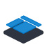
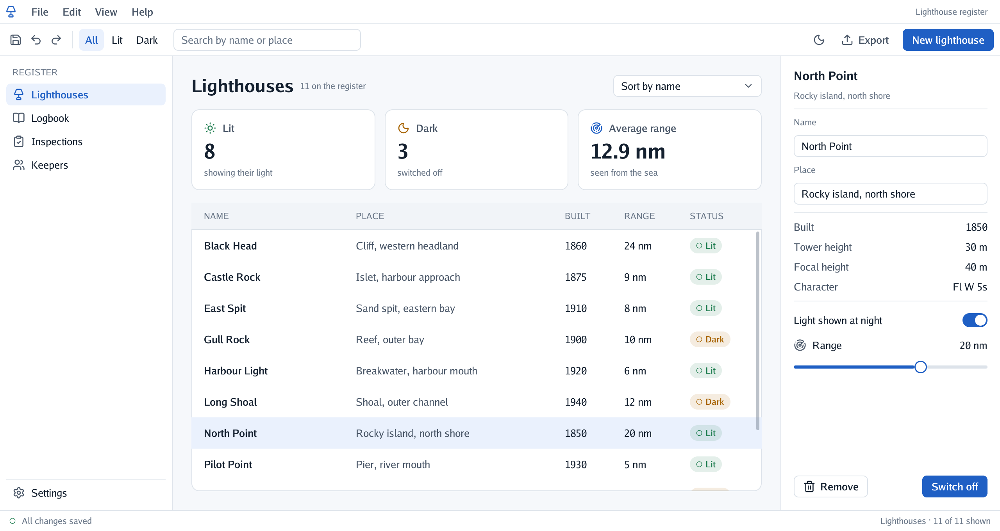

go-ui makes the parts of a program you click and type in: buttons, panels, lists, forms, menus. Over a 3D scene, or as a whole application in a window, a web page or a phone.

A program made with go-ui describes its whole screen again many times a second from its own data (a title, then a button, then a list of these things), and go-ui draws it and tells the program what was clicked. So the screen can never show something out of date.
Pick the line that sounds like you.
| If you… | Read | Time |
|---|---|---|
| just want to see what it looks like | Try it without writing code | 2 min |
| are new to it and want to install it | Get started | 15 min |
| want to learn step by step | 🏴☠️ The quest: a register of lighthouses, in 7 levels | 2 h |
| want to know how something works (layout, text fields, themes) | The guides | — |
| want to use one control (a button, a table, a sheet) | Components: each one with real examples | — |
| are looking up a method or an option | The reference | — |
With Go installed and the projects copied (see Get started), these open finished examples:
go run ./cmd/app # a desktop application (add -dark for the dark theme)
go run ./cmd/example # panels over a 3D island
go run ./cmd/workbench # a table, chips, a menu, drag and drop
The menu on the left (or the files in docs/) follows this order.
Start
Learn
Understand
The guides, one subject each:
Fit, Grow, Share, how sizes are worked outUse
Reference
Platforms
The project
| Word | What it means |
|---|---|
| Go | A programming language. To try these projects you install it once, from go.dev, and type go run … in a terminal. |
| Terminal | The window where you type commands: Terminal on macOS and Linux, PowerShell on Windows. |
| Repository | A project’s folder of files, kept on GitHub. git clone <address> copies it to your computer. |
| Immediate mode | A way of making interfaces: every moment the program describes the whole screen again from its data, so the screen can never show something out of date. |
| Quest | The tutorial of these docs: short levels, each ending with something that works and an achievement. |
Wrap; there is one typeface, so no monospaced table
column (layout, tables).ErrVideoUnsupported) and the system’s dark theme
(Android).go-ui is one of a family of small projects that work together:
| Project | What it does |
|---|---|
| go-renderer | draws 3D scenes and flat interfaces |
| go-ui (this one) | buttons, panels and whole applications |
| go-ui-android | Android apps that look like Android’s own |
| go-sound | sound and music |
| go-scene-builder | 3D scenes from a flat map |
| go-simulator | simulations that change a scene |
| go-simulator-terrain | ground shaped by rivers |
| go-simulator-climate | weather and biomes |
| go-simulator-flora | forests that grow |
| go-simulator-urban | towns that grow |
| go-simulator-motion | a scene that moves |
| go-3ds | Go on the Nintendo 3DS |
⚠️ All of them are educational experiments, written with an AI assistant and pending review by their author: good for learning and playing, not for production.